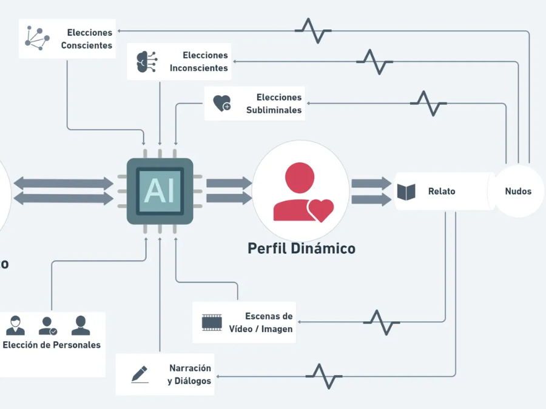
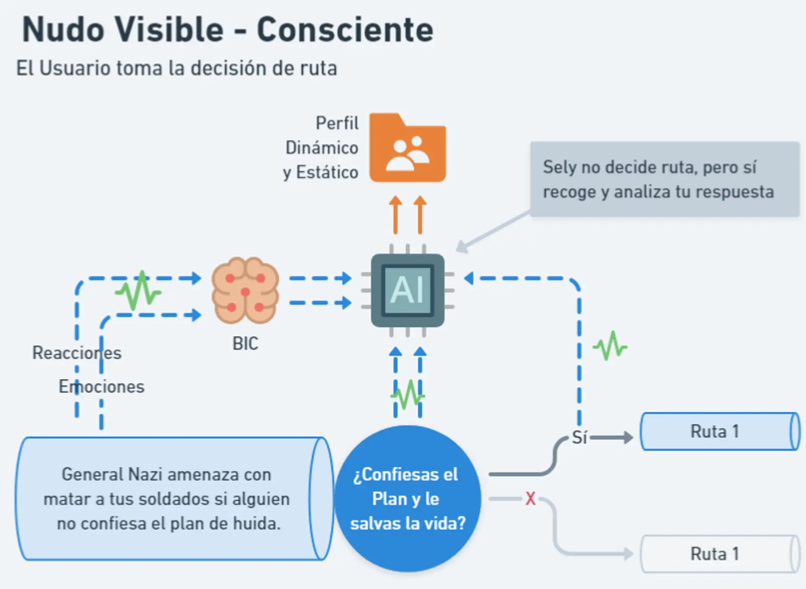
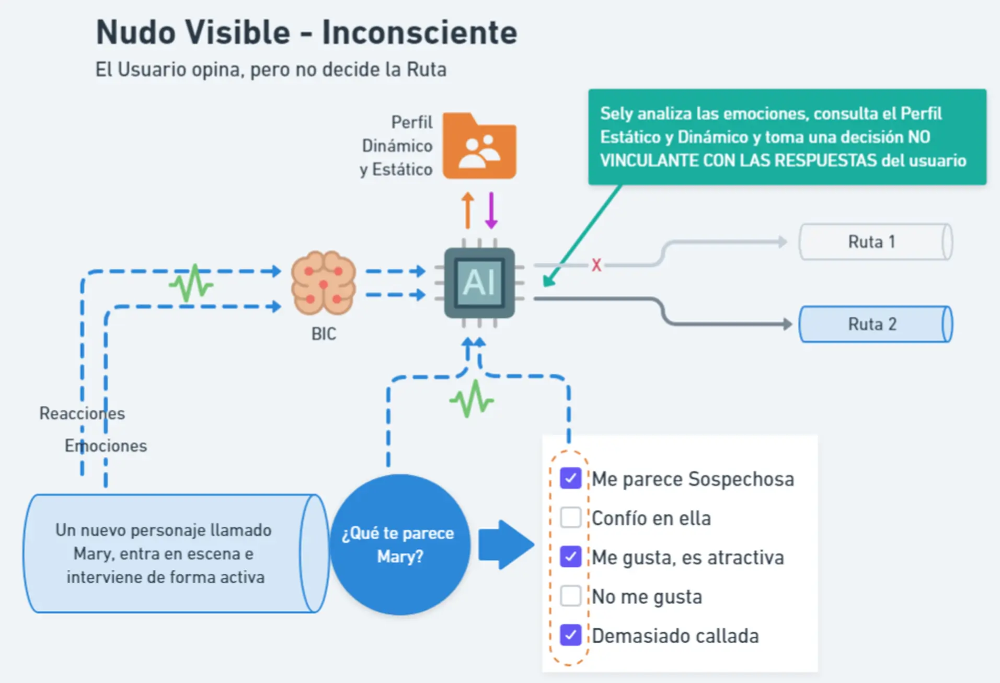
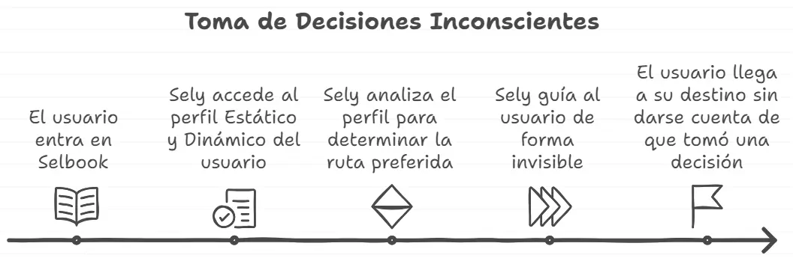
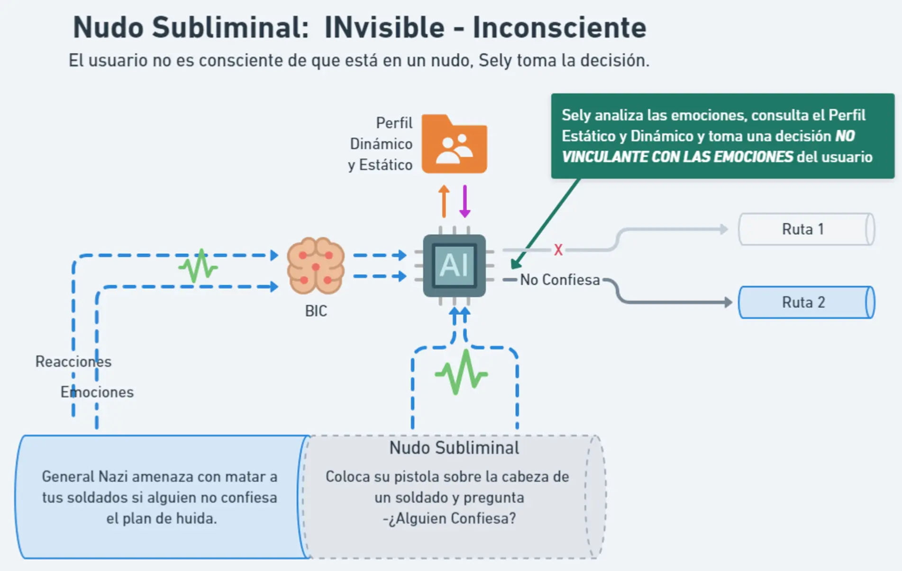

El Producto / Personalización de la Historia
Personalización de la Historia
🤖 La Inteligencia Artificial Aprendiendo del Usuario
Este punto es una de las claves del SelBook: será un sistema que cada vez conocerá mejor al usuario. Ese aprendizaje comenzará con la acción directa y voluntaria del usuario en la configuración inicial y creación del Perfil Fijo.
Es como cuando conoces a alguien por primera vez, una "Cita a Ciegas”. Te presentas, haces un esbozo de cómo eres, qué te gusta, etc. Con esa información, Sely ya se va formando una idea, pero es en el trato diario, en las diferentes “citas" posteriores, cuando podrá verificar y completar el conocimiento, creando un Perfil Estático cada vez más completo.
Es decir, Sely tendrá muchas fuentes de información, pero las lecturas de cada Stringbook ("citas") serán esenciales para Aprender del Usuario.

¿Cómo funcionan esos puntos de recogida de información?
Si nos fijamos en el diagrama anterior, veremos que 3 de esos puntos parten del relato y de la elección inicial del personaje (parte inferior) y otros 3 parten de lo que hemos llamado Nudos (parte superior). Veamos cada punto:
🧑🤝🧑 Elección de Protagonista
Es uno de los elementos más diferenciadores del SelBook. El usuario podrá elegir el Personaje con el que recorrerá la historia. Esta característica es clave para multiplicar el número de lecturas posibles y la oferta de géneros literarios.
Según la elección, podrás tener una historia con mayor dosis de aventura y romance, o de intriga y misterio. Esto permitirá tener diferentes perspectivas de una misma historia. Imagina vivir "El Señor de los Anillos" no solo desde el punto de vista de Frodo, sino desde la lealtad de Sam, el dilema de Aragorn, el misterio de Gandalf o incluso la marginación de Gollum. El lector recorrerá pasajes y tramas con diferentes enfoques, géneros, estilos y voces que de otra forma no podría conocer.
Dimensiones
Llamaremos Dimensiones al número de personajes "elegibles" por el usuario. Un Selbook de 3 dimensiones significa que tienes 3 protagonistas que podrías elegir, cada uno con sus particularidades únicas en cuanto a trama, argumento y géneros. Al presentar las Dimensiones, se ofrecerá una información “emocional” y descriptiva del "viaje", similar a los videojuegos actuales, donde puedes acceder a una "Ficha" con detalles de su personalidad, puntos fuertes, miedos e incluso relatos extra.
Elige tu protagonista:
Frodo Bolsón
Un joven e inocente Hobit que puede cambiar el destino, pero deberá emprender un viaje a lo desconocido…
Aventura
Amistad
Suspense
Aragorn
Un Rey sin reino, con un amor prohibido y una gran lucha interior…
Acción
Aventura
Amor
Gandalf
El Gran Mago Gris sabe que la Oscuridad gana terreno y debe conseguir una gran Alianza para frenarla.
Intriga
Misterio
Magia
Gollum
Un protagonista inesperado, un ser atormentado y obsesionado con su Tesoro…
Misterio
Suspense
Aventura
💬 Narración y Diálogos
La IA estará atenta y “escuchando” en todo momento. Gracias al BIC irá recibiendo inputs en forma de reacciones y emociones, pero existirán "puntos de control” donde prestará una mayor atención, otorgando un mayor peso a la información recogida.
Una persecución...
Un dilema moral o ético...
Cuando aparece un nuevo personaje
A la entrada de un misterioso castillo
Cuando descubres una nueva pista
Cuando muere un personaje
Otro punto clave será las Relaciones entre personajes. En los diálogos, Sely prestará mucha atención para saber si te gusta o disgusta un nuevo personaje, si confías o sospechas de él, etc. Conociendo estas reacciones de antemano, se puede potenciar o multiplicar aquellos pasajes generadores de emociones.
🎬 Escenas de Vídeo o Imagen
El contenido audiovisual suele generar una mayor dosis de emoción. Sely estará muy atenta para recabar esa información. Estos contenidos serán Elecciones: será el usuario quien decida si quiere “vivir” esa escena a través de la lectura o si prefiere verla en un Clip, un Videostory o en formato Cómic. La propia elección ya aporta información. Además, estas escenas contendrán “cebos” o "ganchos" para provocarte algo (una silueta al fondo, una sombra que se mueve...). Tus reacciones a esos cebos decidirán si Sely los aprovecha para llevarte a algún lado.
🧭 Puntos de Elección: Los Nudos
Estos puntos son la Esencia del SelBook. Los Nudos son puntos narrativos donde la historia se divide en varias alternativas de trama (ruta). Existen 3 tipos, y es aquí donde la recogida de información cobra sentido, pues será Sely quien tome la decisión de qué ruta seguir.
Nudo Visible-Consciente
Heredan la fórmula de "Elige tu propia aventura", pero serán pocos y sólo aparecerán cuando exista un “dilema moral” o “Decisión Crítica". El Selbook te obligará a tomar partido.
Ejemplo 1: En el atraco a un banco, los ladrones ponen sus exigencias y si no se cumplen, matarán a un rehén cada hora. Cuando llega la primera hora... ¿Cedes? ¿Aceptas?
Ejemplo 2: Eres un preso dirigiendo un plan de escape. Un Nazi sin escrúpulos pone la pistola en la cabeza de un fiel soldado a tu cargo. Si nadie confiesa el plan, irá matando a todos los sospechosos. ¿Confiesas? ¿Cuándo? ¿Dejas que mate a uno? ¿A dos?

Nudo Visible-Inconsciente
Llegado a un Nudo, a través de una pregunta o "charla" con Sely, serás preguntado por un personaje o situación. Expresarás tu opinión, pero esa información no será ni vinculante ni tiene por qué ser una decisión en sí.
Ejemplo: Aparece un nuevo personaje en escena, Mary. Tu protagonista habla con ella, se relaciona con otros... y en un momento dado, Sely pregunta: "¿Qué te parece Mary? ¿Qué opinas? ¿Sospechas de ella? ¿Te crees su historia?"
Lo interesante aquí es que tu respuesta no es vinculante. Si Mary no te gusta, Sely podría decidir que la ruta a seguir sea ir con ella, obligándote a confiar en un personaje que no te agrada para provocar nuevas emociones.

Nudo Subliminal: Invisible-Inconsciente
Este nudo es el Núcleo Esencial del Selbook. El usuario no será consciente ni podrá adivinar que está en un nudo, en una escena o situación donde todo lo que ha sentido, donde la información de su Perfil Estático y Dinámico, será usada para que Sely, de forma sutil e invisible, enlace con la ruta que considera que más te va a gustar o que más te va a provocar. El usuario nunca conocerá las alternativas, él sólo leerá.

Ejemplo: Imaginemos el caso del campo de concentración. Quizás por tu personalidad (Perfil Estático), hubieras cedido a la primera amenaza para salvar a tu soldado. Pero a Sely le gusta provocarte. Sabiendo eso, permite que el Nazi ejecute a tu fiel soldado. Tus emociones se disparan. Quieres confesarlo todo, pero Sely sabe que una gran historia no es posible sin drama o sacrificio. Por tanto, tomará una decisión que no tiene por qué estar alineada con tus reacciones, sino con el objetivo de crear la mejor historia posible para ti.

✨ La IA como generador de Enlaces e Injertos Narrativos
Como principio esencial del Selbook,
la IA no escribirá las historias
. Las historias (o Stringbooks) serán creaciones humanas en un 85-90%. Un escritor o grupo de escritores crearán el argumento principal y todas las rutas posibles.
Entonces, ¿cómo participa la IA en la creación de la Historia? En los enlaces e injertos.
- Enlace Narrativo: Cuando un usuario llega a un Nudo, de él saldrán varias rutas. El "Enlace Narrativo" es el fragmento de texto que une el Nudo con las diferentes rutas. Estos enlaces podrán ser generados por la IA. Son pocas líneas, pero Sely, conociendo cómo se siente el usuario, puede crear una unión más orgánica y fiel que la que escribiría el propio autor.
- Injerto Narrativo: Es el caso contrario, se da cuando una ruta conecta con otra. Sely, con su conocimiento, podrá crear ese fragmento para que el acople sea más natural y orgánico.